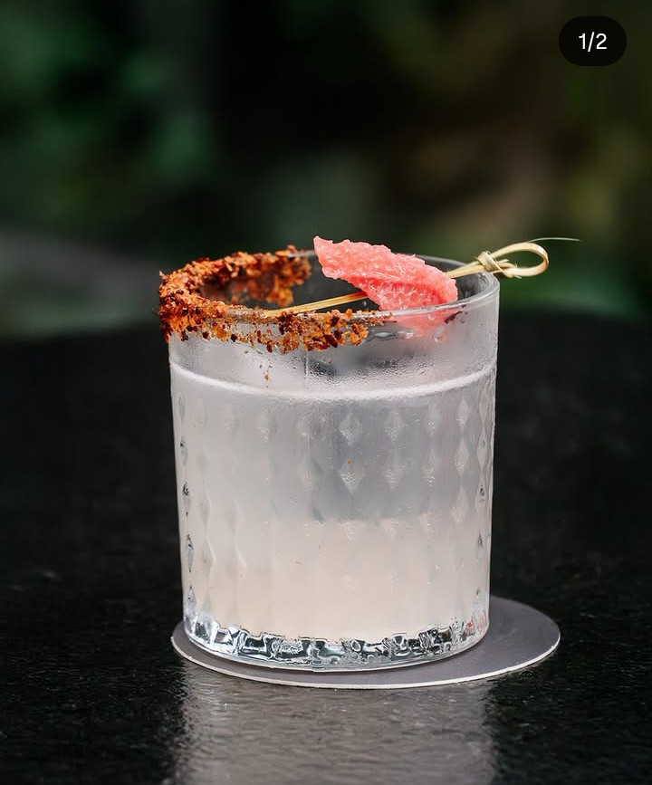
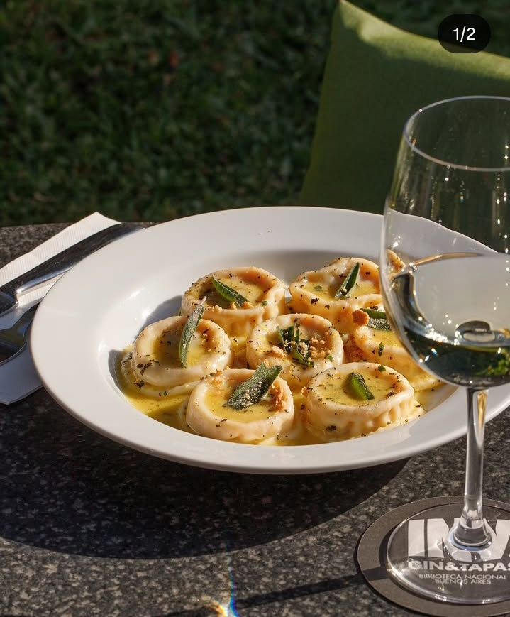
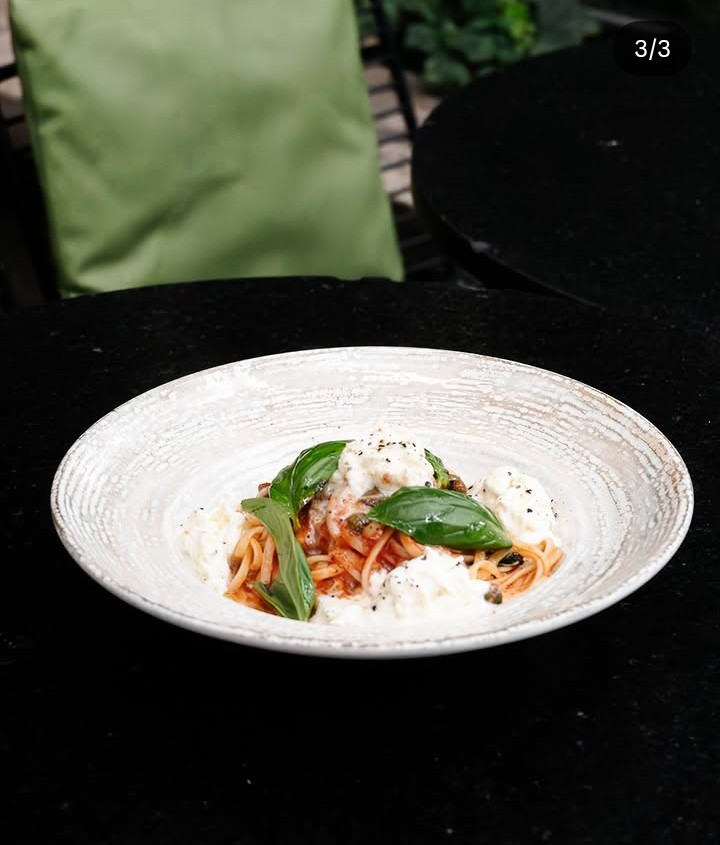

INVERNADERO
Aguero 2502
EXPERIENCIA SENSORIAL
CARTA DE SELECCIÓN

ÑOQUIS DE CALABAZA
Pasta artesanal rellena de ricotta y espinaca con mantequilla de salvia. El maridaje que te sorprenderá.
Cenas
BURRATA POMODORO
Pesto artesanal, tomates cherry confitados y burrata cremosa con albahaca morada orgánica.
EntradasOPINIONES
"Beber un Gin Tonic entre enredaderas infinitas es una experiencia casi literaria. El balance entre lo botánico y el silencio de la coctelería es mágico."
SANTIAGO PÉREZ"La mejor selección de gins de Buenos Aires. La atmósfera nocturna remite a un parque y es un refugio urbano inigualable."
ROMINA COSTA"Un lugar donde el tiempo se detiene. El aroma a flores rojas y hierbas frescas se mezcla perfectamente en cada trago."
JULIÁN GÓMEZ"Beber un Gin Tonic entre enredaderas infinitas es una experiencia casi literaria. El balance entre lo botánico y el silencio de la coctelería es mágico."
SANTIAGO PÉREZ"Beber un Gin Tonic entre enredaderas infinitas es una experiencia casi literaria. El balance entre lo botánico y el silencio de la coctelería es mágico."
Sergio Winchester"Beber un Gin Tonic entre enredaderas infinitas es una experiencia casi literaria. El balance entre lo botánico y el silencio de la coctelería es mágico."
SANTIAGO PÉREZ"Beber un Gin Tonic entre enredaderas infinitas es una experiencia casi literaria. El balance entre lo botánico y el silencio de la coctelería es mágico."
SANTIAGO PÉREZ